{kind=link}
# BIG DATA
# GALANG SUARA
# JAGA SUARA
Seni memenangkan Kompetisi di setiap Pilkada dengan menerapkan TRIANGLE STRATAK
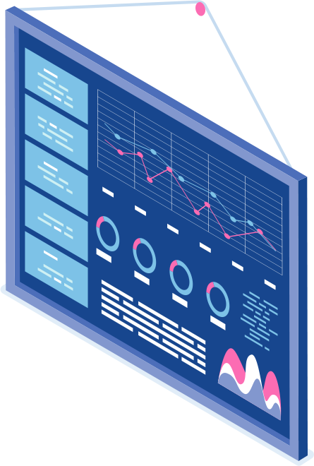


TRIANGLE STRATAK
Strategi dan Taktik pemenangan elektoral yang terukur, efektif, dan teruji
# BIG DATA
# GALANG SUARA
# JAGA SUARA
"Jika Anda mengenal musuh dan mengenal diri Anda sendiri Anda tidak perlu takut akan hasil seratus pertempuran" -- Sun Tzu ---
Nasehat klasik Sun Tzu adalah rumusan klasik tentang arti penting "Big Data". Rumusan ini juga jadi faktor determinan dalam kontestasi elektoral di segala level.
Pengalaman kami dalam mengorganisir pemenangan elektoral mulai dari level bupati/walikota, gubernur, sampai pada pilpres dan pileg, juga pengalaman dalam Pilpres di AS 2007, membenarkan nasehat Sun Tzu itu.
Kenali dirimu, kenali musuhmu, dan kenali persepsi, preferensi, dan sentimen dan horizon pemilih; kesemua adalah raw material (bahan baku) untuk memenangkan kekuasaan secara progresif, efektif, dan permanen.
Pada kami, Big Data adalah “KUNCI”. Big Data kami memiliki karakteristik 5V (volume, velocity, variety, velue, dan veracity), bersumber dari tiga stratak: voterlab, media monitoring, dan real time report. Karakteristik dan holistisasi sumber Big Data ini yang akan menjadi instrumen untuk kita memproduksi kemenangan.

Target Teritori
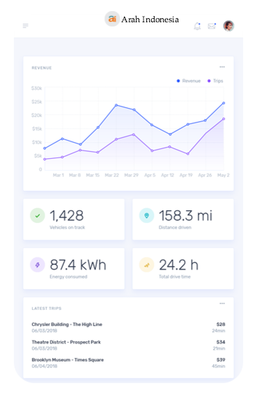
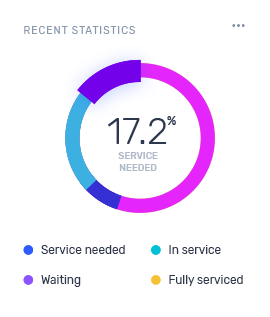
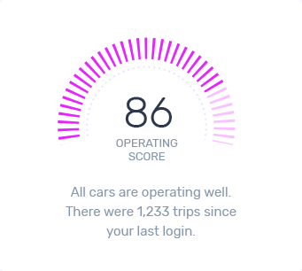
Targetting Base Territory & Targetting Voter
STRATEGI HEGEMONIK MEMBANGUN PENGARUH
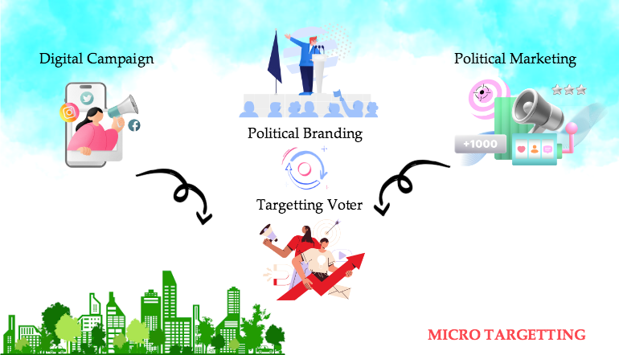
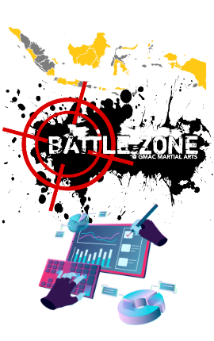
Digital Campign harus berbasis targeting base teritory dan targeting voter (microtargeting). Skema political marketing yang dilakukan ialah war of position
Apa itu war of position (WOP)? WoP adalah perang untuk memenangkan hegemoni, memenangkan simpatik pemilih, memenangkan hati banyak. orang
Mengetahui sentiment public dan berjalan bersama sentiment public adalah kunci memenangan WOP.
Analisis melalui social media monitoring akan memandu klien mengetahui sentiment public termasuk jenis isntrumen yang efektif dalam komunikasi politik.
MULTIPLE BENEFITS STRATAK TRIANGLE
Kami menggunakan Big Data bukan survei elektabilitas. Big Data kami bersumber dari investigasi lapangan (Data Voterlab) monitoring media online dan media sosial (Data Media). Dua sumber data ini memberi gambaran obyektif, yang selanjutnya kami olah menjadi raw material pemenangan.
Kami membagi wilayah kontestasi dalam targeting base territory dan targeting voter. Targeting base territory adalah wilayah-wilayah yang masuk dalam skala prioritas operasi. Targeting voter adalah basis-basis pemilih menjadi target operasi.
Semua operasi pemenangan di basis-basis suara pemilih, termasuk mengetahui kekuatan lawan, akan diukur secara obyektif oleh Tim Real Time Reporting, yang sekaligus jadi bahan evaluasi dan database Tim Monitoring & Evaluasi dan Tim Voter Bank.
More than Solutions
1. Voterlab
2. Voterlab
3. Sosial Media
4. Media
5. Organ Pemenangan
6. Organ Pemenangan
7. Organ Pemenangan
8. Organ Pemenangan
9. Real Time Reporting
10. Real Time Reporting
11. Real Time Reporting
Arah Indonesia team
Portofolio
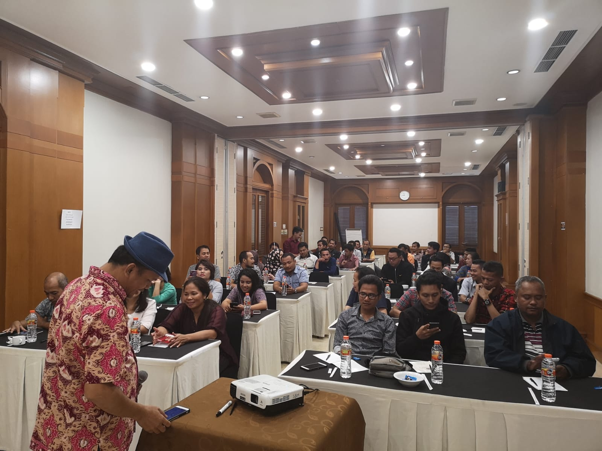
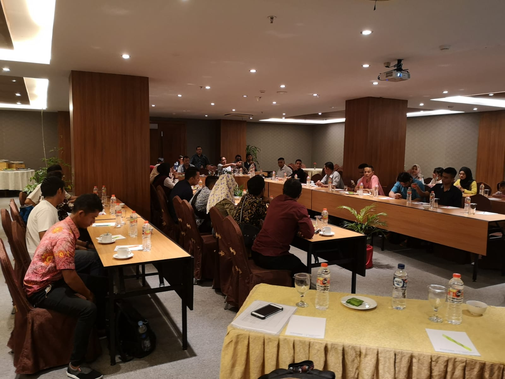
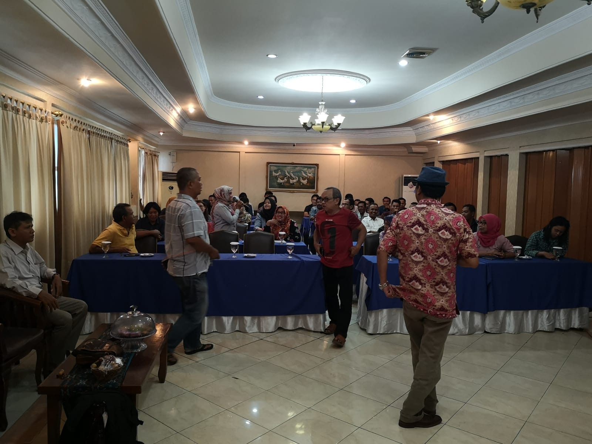
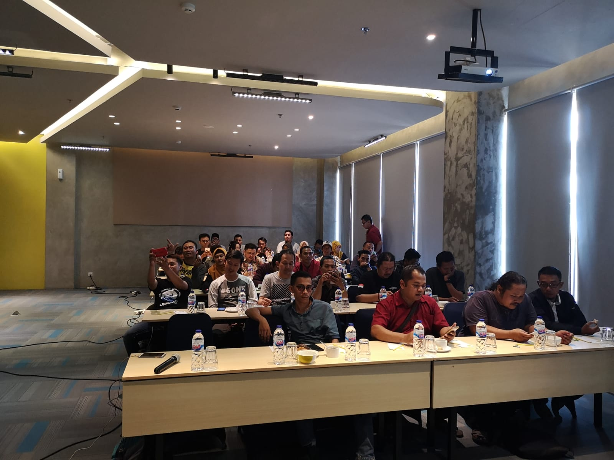
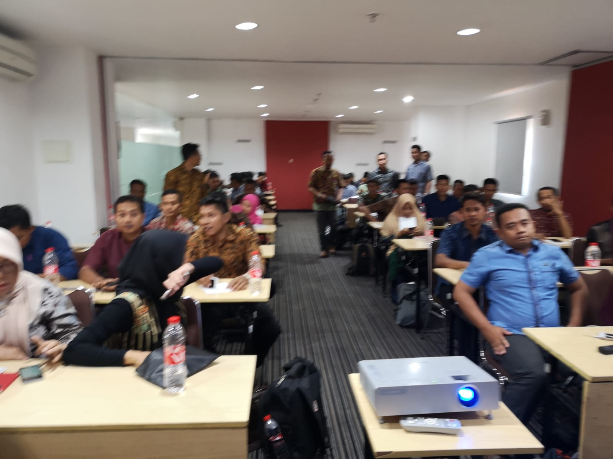
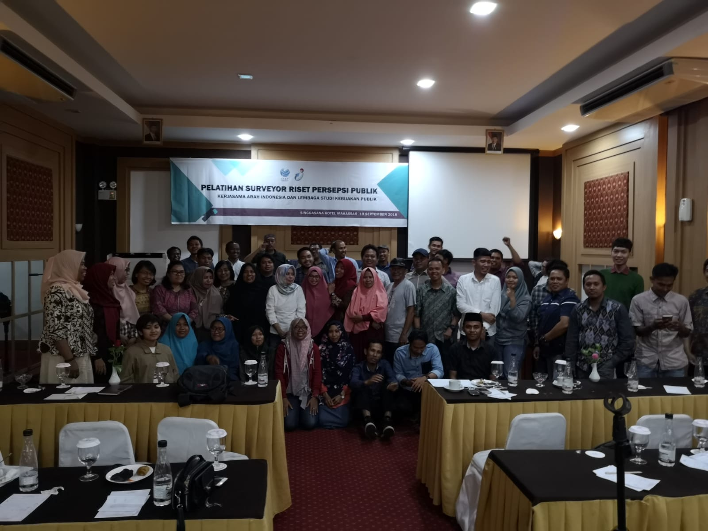
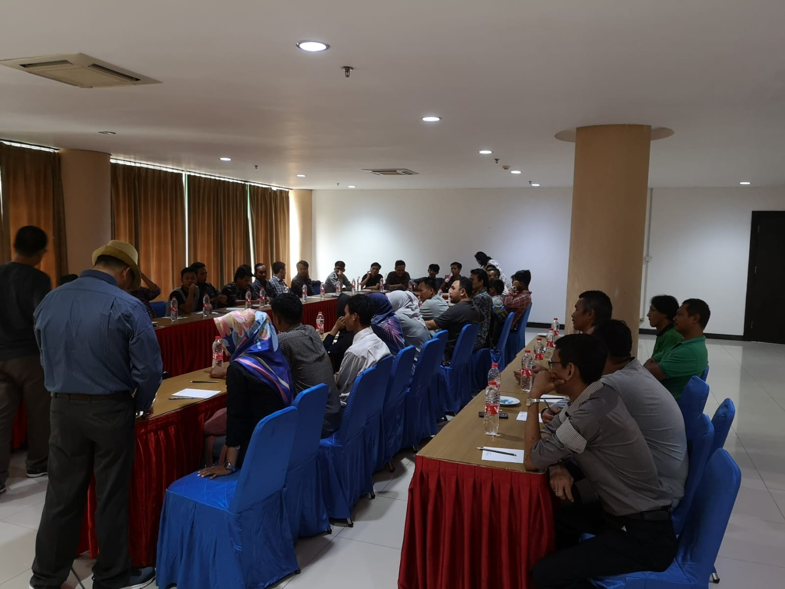
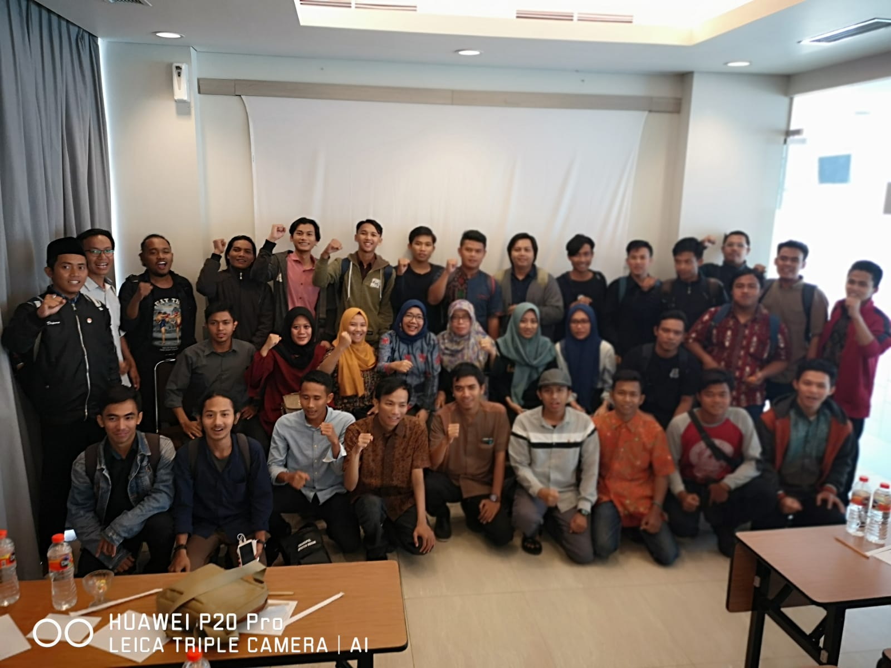